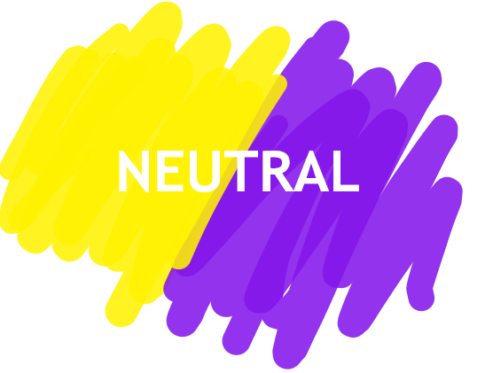

EVALUATED AS NEUTRAL BEVERAGE

We have identified your beverage as neutral. Therefore, we have the information below to help educate you if your drink is suitable for your health. This way you can prevent acid refluxes, heartburn, and much more.
Similar Beverages
Pure Water
GO BACK